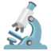
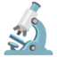

Un grupo de amigos tropieza con una inquietante mansión abandonada. Ahora, confinados en sus siniestras garras, se encuentran
en una escalofriante serie de asesinatos. Cada día trae un nuevo enigma,
con uno de ellos como desafortunada víctima y el resto como sospechosos.
Encerrados en este ciclo sin fin por fuerzas malévolas conocidas únicamente como los Productores,
nuestros héroes tropiezan con un rayo de esperanza que trasciende tanto el espacio como el tiempo, permitiéndoles
liberarse de los confines de la vieja mansión victoriana.
Sin embargo, mientras se aferran a esta nueva libertad, las maquinaciones de sus captores persisten, tejiendo
los hilos del misterio de cada asesinato diario.
¡Prepárate para resolver un nuevo misterio de asesinato! Tu objetivo es averiguar quién lo hizo, cuándo sucedió y qué arma se utilizó.

¡Prepárate para resolver este rompecabezas! Recibirás pistas que poco a poco descubrirán la verdad detrás del asesinato. El rompecabezas diario se puede resolver en dos modos. En el modo fácil, todos dirán la verdad. Opcionalmente, el asesino a veces puede mentir si deseas un desafío más difícil.
Cada pista que leas afectará tu puntuación. Piensa cuidadosamente mientras buscas evidencias y cuestionas a los sospechosos para resolver el misterio. Cuando lo resuelvas, obtendrás un rango del maravilloso sleuth-o-meter™.
¿Estás listo para el desafío? ¡Empecemos a investigar!
Usa esta tabla para llevar un registro de tus hechos, pistas y deducciones. Puedes consultar la sección de cómo jugar si lo necesitas.
Empieza eligiendo si el asesino nunca miente (más fácil) o se le permite mentir (más difícil).
Después de trabajar toda la noche recolectando evidencias y analizando pistas, es hora de resolver este caso
eligiendo al sospechoso, la hora del asesinato y el arma. Una advertencia: si seleccionas
la respuesta incorrecta, puedes intentarlo de nuevo, pero


 
